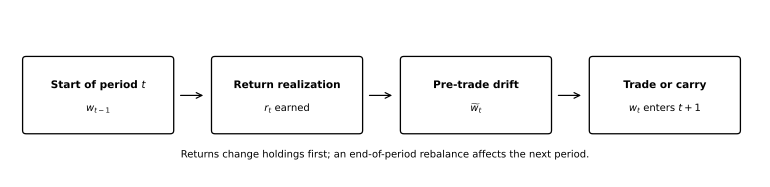
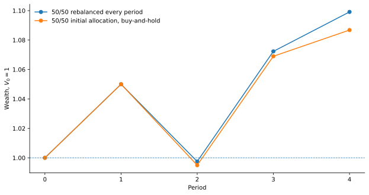

Portfolio Backtesting and Rebalancing
Getting the timeline, weight drift, and turnover right before interpreting performance
QM007 · Investment Methods · Portfolio Methods · Foundation
Core idea. A portfolio backtest is a timeline, not just a return formula. The weights in force at the start of a period earn that period’s asset returns. Those returns change the weights. A rebalance, if one occurs, then sets the holdings for the next period.
Use it for. Historical simulations of fixed-weight, periodically rebalanced, or signal-driven portfolios when you need transparent wealth accounting, weight drift, turnover, and information timing.
It does not establish. That a backtested strategy is economically useful, statistically reliable, investable after costs, or robust to strategy selection. Correct bookkeeping is necessary; it is not sufficient evidence of investment skill.
The Question
A portfolio rule may sound simple: choose weights, multiply them by returns, and compound the result.
The important complication is timing: portfolio weights are dated. Suppose a portfolio begins month \(t\) with 50% in each of two assets. If one asset rises and the other does not, the portfolio no longer ends the month at 50/50. If the strategy does not trade, those drifted weights must carry into the next month. If it does trade, the rebalance happens only after the return that caused the drift has already been earned.
That leads to the central question:
Which weights earn each period’s returns, how do those weights drift, and when does a rebalance affect the portfolio?
If those three pieces are not explicit, a backtest can look numerically plausible while embedding a hidden rebalance, a one-period timing error, or a turnover measure that does not match the stated trading rule.
Why It Matters
Historical portfolio results are path dependent. Buy-and-hold and periodic rebalancing are different dynamic rules, and they generally generate different weight and wealth paths (Perold and Sharpe 1988). A backtest must therefore reproduce the rule that an investor could actually have followed through time.
The same principle applies when weights are estimated from data. In a rolling out-of-sample portfolio exercise, information available before the holding period determines the weights used during that holding period. DeMiguel, Garlappi, and Uppal use prior observations to form portfolio weights and then evaluate the resulting portfolio out of sample (DeMiguel et al. 2009). A signal formed with information through the end of period \(t\) should not quietly earn period-\(t\) returns under a next-period implementation convention.
Correct timing also matters for turnover. The trade at a rebalance date is not generally the difference between today’s target and the previous target. It is the difference between today’s target and the drifted portfolio that actually exists immediately before trading.
Intuition: One Period Has Four States
A useful way to reason about a backtest is to split every period into four states.

For period \(t\):
- Start: enter the period with actual weights \(\mathbf w_{t-1}\).
- Return realization: those weights earn asset returns \(\mathbf r_t\).
- Drift: relative asset performance creates pre-rebalance weights \(\widetilde{\mathbf w}_t\).
- Trade or carry: if the date is a rebalance date, trade to target \(\mathbf w_t\); otherwise set \(\mathbf w_t=\widetilde{\mathbf w}_t\).
The final \(\mathbf w_t\) then enters period \(t+1\).
This timeline is the accounting backbone of the article.
Portfolio Return and Wealth
Let \(r_{i,t}\) be the simple return of asset \(i\) during period \(t\), and define its gross return or price relative as
\[ x_{i,t}=1+r_{i,t}. \]
Let \(w_{i,t-1}\) be the actual weight in force before period-\(t\) returns are realized. In the fully invested long-only setup used here,
\[ \sum_i w_{i,t-1}=1, \qquad w_{i,t-1}\ge 0. \]
The portfolio gross wealth factor is
\[ g_{p,t} = \mathbf w_{t-1}^{\top}\mathbf x_t, \]
so the simple portfolio return is
\[ r_{p,t} = g_{p,t}-1 = \mathbf w_{t-1}^{\top}\mathbf r_t. \]
If \(V_{t-1}\) is wealth entering the period, gross-of-cost wealth evolves as
\[ V_t=V_{t-1}(1+r_{p,t}). \]
Across \(T\) periods,
\[ \frac{V_T}{V_0} = \prod_{t=1}^{T}(1+r_{p,t}). \]
These discrete-time wealth identities are consistent with the portfolio and price-relative formulation used by Cover and Ordentlich (Cover and Ordentlich 1996).
Under the convention used here, \(\mathbf w_{t-1}\) earns \(\mathbf r_t\). An end-of-period target \(\mathbf w_t\) is the portfolio that enters period \(t+1\). Changing this notation is possible, but the code and prose must change together.
Weight Drift Before Rebalancing
Returns change the dollar value of each position. Even when no trade occurs, portfolio weights therefore move.
Immediately after period-\(t\) returns, but before any rebalance, asset \(i\) has weight
\[ \widetilde w_{i,t} = \frac{w_{i,t-1}(1+r_{i,t})} {\mathbf w_{t-1}^{\top}(\mathbf 1+\mathbf r_t)}. \]
The denominator is the portfolio’s gross wealth factor. The numerator is asset \(i\)’s contribution to end-of-period wealth.
This formula can also be derived by keeping explicit share counts: let each position grow by its own gross return, add the resulting position values to obtain total wealth, and divide each position value by the total. The two calculations must agree.
If there is no rebalance, the next period begins with
\[ \mathbf w_t=\widetilde{\mathbf w}_t. \]
Resetting weights to the old target without recording a trade is a hidden rebalance.
Rebalancing Is a Rule, Not a Label
A rebalanced portfolio needs at least three pieces of information:
- the target weights or target-weight rule;
- the dates on which the target may be restored or changed; and
- the execution convention that determines when the new weights start earning returns.
Perold and Sharpe describe dynamic asset-allocation strategies as explicit rules for changing portfolio exposures as asset values move (Perold and Sharpe 1988). Buy-and-hold is the no-trade case after the initial allocation. A constant-mix strategy is different: it restores a constant fraction of wealth to the risky asset according to its stated rebalance rule.
Under the convention used here, a rebalance at the end of period \(t\) changes the portfolio from \(\widetilde{\mathbf w}_t\) to \(\mathbf w_t\). The new weights earn period \(t+1\), not the return that has already occurred in period \(t\).
Numerical Illustration: The Same Returns, Different Rules
The four-period path below is deliberately small. It is designed to expose the accounting mechanics. It does not show that rebalancing generally raises or lowers returns.
Start with two assets, A and B, and an initial 50/50 allocation. Consider the following simple returns:
| Period | Asset A | Asset B |
|---|---|---|
| 1 | 10% | 0% |
| 2 | -10% | 0% |
| 3 | 20% | -5% |
| 4 | -5% | 10% |
First consider a portfolio that rebalances to 50/50 after every period.
After period 1, its return is
\[ 0.5(0.10)+0.5(0)=0.05. \]
Wealth rises from 1.000 to 1.050. But the portfolio is no longer 50/50 before trading. Asset A’s pre-rebalance weight is
\[ \widetilde w_{A,1} = \frac{0.5(1.10)}{1.05} = 0.52381, \]
and asset B’s weight is 0.47619.
Trading back to 50/50 produces L1 turnover of
\[ |0.50-0.52381|+|0.50-0.47619| =0.04762. \]
Under the one-way convention defined below, that is 0.02381, or 2.381% of wealth on one side of the trade.
The full path is:
| Period | Rebalanced return | Rebalanced wealth | Pre-trade weight in A | L1 turnover | One-way turnover |
|---|---|---|---|---|---|
| 1 | 5.000% | 1.050000 | 52.381% | 4.762% | 2.381% |
| 2 | -5.000% | 0.997500 | 47.368% | 5.263% | 2.632% |
| 3 | 7.500% | 1.072313 | 55.814% | 11.628% | 5.814% |
| 4 | 2.500% | 1.099120 | 46.341% | 7.317% | 3.659% |
Now compare the same initial 50/50 portfolio with buy-and-hold. After period 1, the 52.381/47.619 drift is carried into period 2 because no trade occurs. That changes period-2 return and every later weight.

After the first two periods, rebalanced wealth is 0.9975 while buy-and-hold wealth is 0.9950. After all four periods, the corresponding values are approximately 1.09912 and 1.08680.
Those numbers are not evidence that rebalancing is superior. Reverse the return sequence or change the path and the comparison can change. The point is narrower: two different trading rules should not be expected to generate the same backtest.
Turnover: State the Convention
There is no single universal turnover convention.
DeMiguel, Garlappi, and Uppal measure the amount traded by comparing desired post-rebalance weights with the portfolio weights that exist immediately before rebalancing (DeMiguel et al. 2009). Following that structure, define L1 turnover as
\[ TO_t^{L1} = \sum_i |w_{i,t}-\widetilde w_{i,t}|. \]
For the fully invested, no-external-flow setup used here, total buys equal total sells. Under that setup, we also report an explicitly named one-way turnover convention:
\[ TO_t^{1w} = \frac12 TO_t^{L1}. \]
The factor of one-half follows from this accounting setup; it is not presented as a universal definition of turnover.
A statement such as “turnover is 10%” is incomplete unless the reader knows whether the number is L1, one-way, annualized, averaged across dates, or defined another way. How a declared turnover measure maps into trading costs and net performance is a separate accounting question.
Information Timing for Signal-Driven Weights
A backtest may use fixed targets, but many investment rules estimate weights from historical information. For signal-driven portfolios, write down the information-timing rule before calculating performance.
Under the next-period convention used here:
- information available through the end of period \(t\) is used to form the target \(\mathbf w_t\);
- the portfolio trades, if the execution rule allows it, after that information becomes available; and
- \(\mathbf w_t\) earns the return of period \(t+1\).
This is the same broad out-of-sample discipline used in rolling portfolio evaluation: estimates from a historical window determine subsequent holdings, and those holdings are evaluated on future returns (DeMiguel et al. 2009).
Same-close execution can be valid, but it relies on a different information and execution assumption. The timestamps must show that the signal was known and tradable at the price used in the backtest. The requirement is not a universal one-day lag; it is an explicit and internally consistent information-and-execution boundary.
Implementation Pattern
A transparent backtest can be written as a state transition rather than as a single vectorized return expression:
weights = initial_weights
wealth = 1.0
for t in periods:
# weights are known before period-t returns
portfolio_return = weights @ returns[t]
wealth *= 1 + portfolio_return
# returns create the pre-trade portfolio
drifted = weights * (1 + returns[t]) / (1 + portfolio_return)
if is_rebalance_date(t):
target = target_from_information_available_through(t)
turnover_l1 = abs(target - drifted).sum()
weights = target
else:
weights = driftedThis is Python-like pseudocode. A complete backtest also needs explicit rules for the return series, missing observations, universe membership, instrument inception, corporate actions, currencies, external cash flows, transaction costs, taxes, leverage, and execution.
Hands-on Lab: Change the Rebalancing Frequency
The optional lab uses the same four-period return path and compares three rules: 50/50 rebalanced every period, 50/50 rebalanced every two periods, and buy-and-hold.
Run it yourself. Start with the lab guide. For a self-contained copy, use the complete lab bundle. Direct source: Python · R.
python labs/python/qm007_hands_on.pyThe exercise is useful because it changes one design choice while preserving the accounting timeline. More frequent rebalancing will generally create more opportunities to trade, but the realized turnover and wealth effects remain path dependent.
What a Backtest Should State
The generic formulas do not decide how an empirical dataset should be built. Before interpreting historical performance, document the choices that can change the path.
| Item | Minimum declaration |
|---|---|
| Return series | Price return or total return; currency/FX treatment when relevant |
| Start weights | Initial allocation and whether it is assumed tradable at the start date |
| Weight timing | Which weights earn which period’s returns |
| Signal timing | Information cutoff used to form each target |
| Rebalance rule | Frequency, trigger, target, and execution convention |
| Non-rebalance dates | Drifted weights carried forward rather than silently reset |
| Turnover | Exact formula and aggregation convention |
| Universe | Entry, exit, inception, missing-price, and delisting rules when relevant |
| Costs and taxes | Gross or net result; if net, the explicit cost/tax mapping |
| Benchmark | Its own rebalancing and return conventions, not only its label |
Common Mistakes
1. Letting \(w_t\) earn \(r_t\) when \(w_t\) uses information from \(t\)
That is a same-period information leak under the next-period convention. Either lag the exposure or justify a different execution timeline with actual timestamps and tradability assumptions.
2. Resetting to target weights on non-rebalance dates
If the code carries target_weights forward instead of the drifted holdings, it is rebalancing even when the strategy claims not to trade.
3. Computing turnover from target to target
Trading occurs from the portfolio that exists immediately before the trade. Relative price changes can make that portfolio materially different from the previous target.
4. Mixing simple and log-return algebra
The weighted-return identity in this article uses simple returns. Log returns are useful in many settings, but a weighted sum of asset log returns is not generally the portfolio’s simple return.
5. Calling a gross backtest “net performance”
No transaction costs or taxes are deducted in the gross accounting shown here. A gross path should remain labeled gross until a separately specified implementation-cost model is applied.
6. Treating a clean backtest as proof of a good strategy
A technically correct historical simulation can still be overfit, economically weak, or selected from many alternatives after inspecting the same data. Backtest overfitting is a separate model-selection problem (Bailey et al. 2017).
When This Setup Needs to Be Extended
The accounting above assumes a relatively simple long-only return process. Extend the state variables and accounting explicitly when the portfolio includes:
- leverage, short positions, margin, or financing costs;
- external deposits or withdrawals;
- transaction costs, taxes, or nonlinear market impact;
- derivatives with cash flows or changing notionals that are not represented by a simple asset-return vector;
- changing universes whose entry and exit rules are not already encoded in the return/weight process; or
- an execution convention that depends on intraday information and prices.
Those cases can still be backtested, but the state variables and accounting need to be extended explicitly.
Used in SlackQuant Research
When Protection Works but the Portfolio Still Lags uses historical portfolio paths with explicit monthly rebalancing and signal timing. QM007 explains the general portfolio-accounting mechanics; the research paper contains the application-specific defensive rule, long-horizon evidence, benchmarks, and implementation details.
Reproducibility
The accompanying materials include the synthetic return path, Python and base-R implementations, expected numerical results, two reproducible figures, and the hands-on rebalancing-frequency lab. The example code reproduces the weight drift, turnover, and wealth paths reported above.